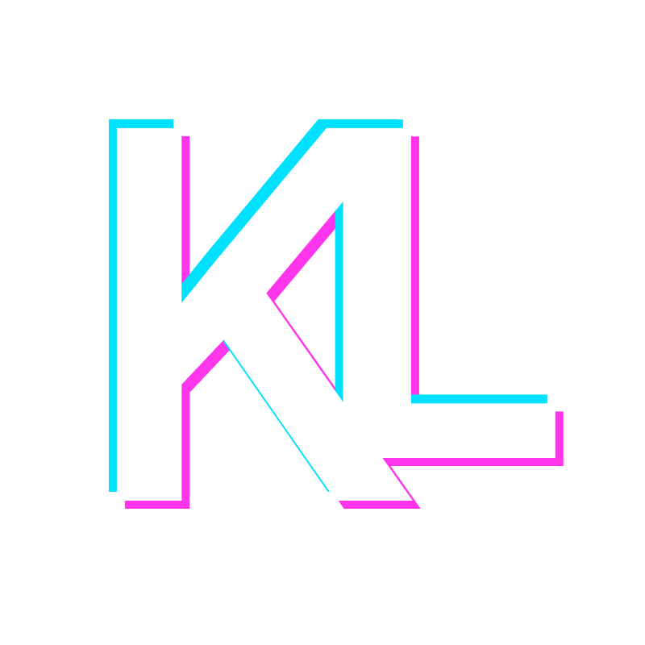
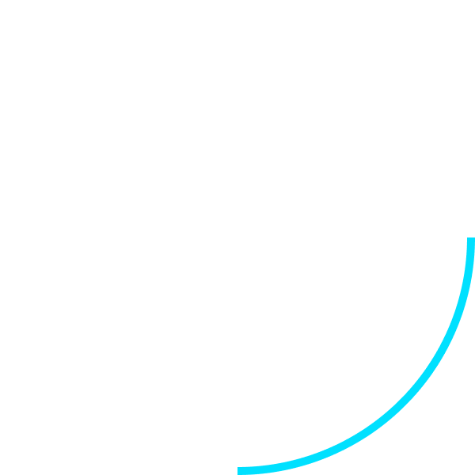
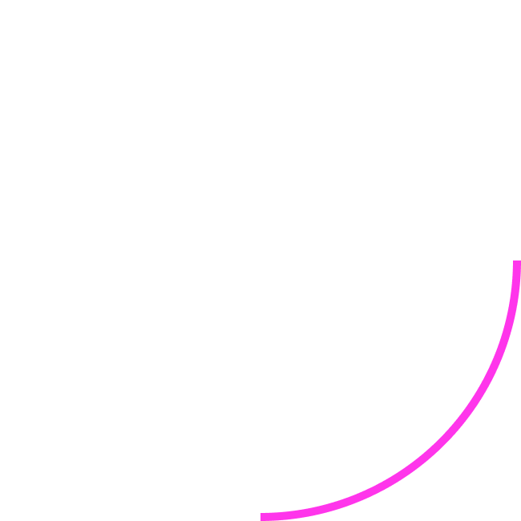
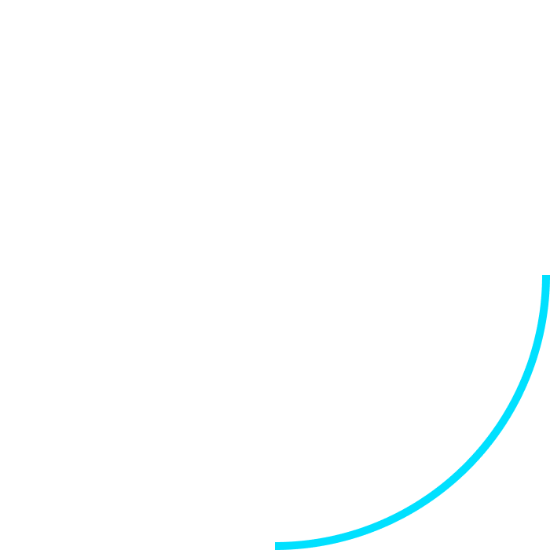

THIS IS A WORK IN PROGRESS
I am designing, printing, wiring and programming an Arduino Drone. The body and arms are created in SolidWorks and 3D-printed on my own printer. The design is modular so that if one arm breaks, I can easily replace the part without having to reprint an entire new body.
I have also constructed a radio transmitting module as well. This transmitter consists of two joysticks and two potentiometers wired into an Arduino Nano, which processes and converts the signals to transmit wirelessly by the NRF module. This entire controller is powered off six AA batteries.
The drone electronics consist of a receiving NRF module that is wired to another Arduino Nano to convert the signals back and then sends those signals to the brain, another Arduino Nano. Yes, this drone consists of three different Arduinos. This main Arduino Nano, the flight controller brain, processes the signals from the radio receiver and the gyroscopic module to calculate the angle and velocity of the drone. These calculations are then processed and send to the electronic speed controllers to speed up or slow down the motors. The drone is powered off a single 2200mAh rechargable LiPo battery.
In the future, I would like to add a camera to see what the drone is seeing, along with a Go-Pro on top of the drone to capture aerial photos and videos.
During TOHacks 2020, myself and two other team members built Puppr, a website to connect lonely, isolated users with local dogs that are available for adoption. These dogs will help with users' mental health as they complete quarintine and reimmerse themselves back into a social world. The entire website was built in 48 hours from scratch.
Puppr's front end was written in HTML, CSS and Javascript while the backend was written in Python. The landing and signup page are both purely HTML and CSS, while the selection page's functionality is Javascript. When selecting the dogs, you are seeing real dogs available from a real shelter. Using Flask to build a web-scraping API, we were able to import that information into our page for the user to easily see. Whether you select the checkmark or not, you will cycle through a variety of dogs (however many are available at the time). If you choose to click the checkmark, the dog's profile will be saved in the left sidebar, where you can click on that saved dog to go the shelter's webpage. Since this entire app was built within a 48 hour time frame, our web-scraping is accurate, but a little slow; if we were to redo this project, that would be one of our key redesigns for Puppr.
In 2018, I bought a cheap, inaccurate 3D-printer to see what the whole craze around hobbiest 3D-printing was about. Turns out that 3D-printing is extremely functional and amazingly time-consuming! I have learned the ways of 3D-printing including designing, modelling, slicing, painting and even starting a business.
When I first bought my 3D-printer, I was looking for something cheap as to not spend too much money. What I purchased was an Anet A8, a clone of Joseph Prusa's printer: the Prusa i3, for around $200 CAD. Since first receiving and building the printer, I have upgraded many of the components and have transformed it into the printer I use today. Using my 3D-printer to 3D-print upgrades allowed me to increase the quality of each part by 200% and creating an infinite loop of printing, upgrading and printing even higher quality parts.
Fast forward a few months, to March 2019. I was starting to print more and more little fidget toys and figurines. People who saw my creations thought that the little prints were fascinating. Using this knowledge, I decided to found a mini company, kleez3dprints. Within this company, I took many custom orders and presented customers with a finish print that met all their requirements. Examples are team keychains, figurines of video game characters, nametags, various fidget toys and functional everyday aids.
Recently, I have been doing much larger projects. These projects include articulating digital models, slicing them into resonably sized sub-components, then printing, gluing and painting. One such project was the model of Iron Man, which took a total of 40 hours to complete from start to finish.
3D-printing is an ever-expanding field and I am very grateful that I was able to learn about and expand my knowledge of such a interesting and useful area.
Using Samsung's Beta GalaxyWatchDesigner Software, I created a dynamic watchface for my Samsung Gear Fit 2 Pro Active Watch. As the software is not a full release, there are various problems using the interface, but I was able to create a watchface that changed the background throughout the day. I also personalized the screens to display the relevant data I needed, such as date, steps, heartrate and of course, the time. In the future, I wish to build a watchface for the next smartwatch I buy. Hopefully, next watchface I am able to add miniture animations that allow the interface to be pleasing, yet informative.
During Programming 12 in school, I decided to recreate the classic 1980s Donkey Kong Arcade game. In the limited time frame, I was able to completely recreate the first level in it's entirety. The game included accurate gameplay and accurate sprite animations. Viewing the final product compared to the original, I had almost made an exact replica of the orignal arcade game.
To code the game, I used a combination of Java and HTML along with JGEngine to render the environment. It took a long time to implement the sprites and bounding boxes from the sprite sheet and was also difficult to create seamless animations, but it turned out quite smooth in the end. I had started with basic keyboard controls, but eventually integrated a gyroscopic movement controller. This controller was an alternate way to play the game and added a level of difficulty, both in the programming acclerometer values and playing the game.

I was Co-Captain of the FIRST Robotics Team that competed at the FIRST Western National Competiton. I lead the team through design, fabrication, and testing throughout the robot's construction. The FIRST team was only in it's second year and there were various hiccups along the journey to the Western National Competition. Many of the members did not have any knowledge of fabrication, electronics or programming, so myself and the other captain took it upon ourselves to educate the team as much as we could.
I taught the students how to think about the many factors and variables that we needed to consider when designing such a robot, but keep the solutions realistic and manageable for the size of our team. We also had to consider the easiest and most efficient way to manufacture said robot within the 6 week timeframe provided. At the end of 6 intense weeks of designing and building, the team arrived at a relatively well designed robot given the materials and time.